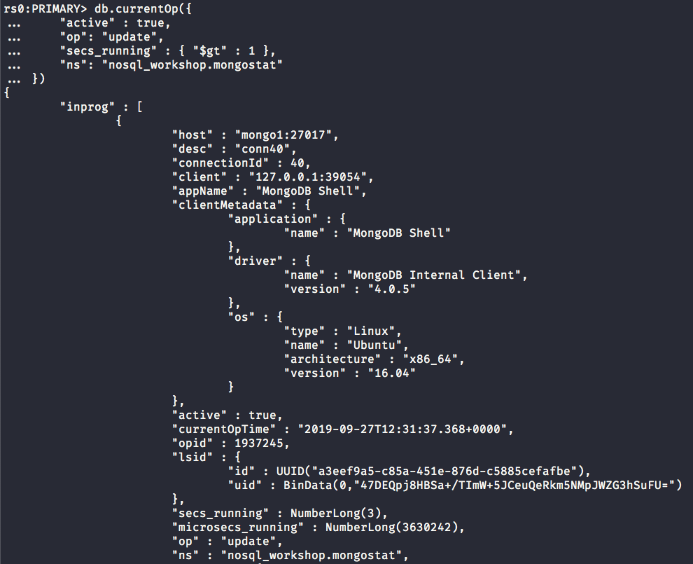

NoSQL Workshop - Mongo Administration
Sections:
- Production Notes
- Operations Checklist
- Development Checklist
- Performance
- Configuration and Maintenance
- Data Center Awareness
- MongoDB Backup Methods
- Monitoring for MongoDB
- Personal Notes on MongoDB Administration
- Bread Crumb Navigation
Production Notes
Please read the official Production Notes document
Operations Checklist
Please read the official Operations Checklist document
Development Checklist
Please read the official Development Checklist document
Performance
Please read the official Performance document
Configuration and Maintenance
Please read the official Configuration and Maintenance document
Data Center Awareness
Please read the official Data Center Awareness document
MongoDB Backup Methods
Please read the official MongoDB Backup Methods document
Monitoring for MongoDB
Please read the official Monitoring for MongoDB document
Personal Notes on MongoDB Administration
Mongo Perf usage
Let us create json file to get performance metrics in mongodb
mongoperf --help
mongoperf
usage:
mongoperf < myjsonconfigfile
{
nThreads:<n>, // number of threads (default 1)
fileSizeMB:<n>, // test file size (default 1MB)
sleepMicros:<n>, // pause for sleepMicros/nThreads between each operation (default 0)
mmf:<bool>, // if true do i/o\'s via memory mapped files (default false)
r:<bool>, // do reads (default false)
w:<bool>, // do writes (default false)
recSizeKB:<n>, // size of each write (default 4KB)
syncDelay:<n> // secs between fsyncs, like --syncdelay in mongod. (default 0/never)
}
mongoperf is a performance testing tool. the initial tests are of disk subsystem performance;
tests of mongos and mongod will be added later.
most fields are optional.
non-mmf io is direct io (no caching). use a large file size to test making the heads
move significantly and to avoid i/o coalescing
mmf io uses caching (the file system cache).
We are going to add the following json config file:
{ recSizeKB: 8, nThreads: 12, fileSizeMB: 10000, r: true, mmf: false }
Let us run a mongo perf test:
mongoperf < perf.json
mongoperf
use -h for help
parsed options:
{ recSizeKB: 8, nThreads: 12, fileSizeMB: 10000, r: true, mmf: false }
creating test file size:10000MB ...
1GB...
2GB...
3GB...
4GB...
5GB...
6GB...
7GB...
8GB...
9GB...
testing...
optoins:{ recSizeKB: 8, nThreads: 12, fileSizeMB: 10000, r: true, mmf: false }
wthr 12
new thread, total running : 1
read:1 write:0
201 ops/sec 0 MB/sec
346 ops/sec 1 MB/sec
308 ops/sec 1 MB/sec
314 ops/sec 1 MB/sec
335 ops/sec 1 MB/sec
195 ops/sec 0 MB/sec
320 ops/sec 1 MB/sec
320 ops/sec 1 MB/sec
new thread, total running : 2
read:1 write:0
677 ops/sec 2 MB/sec
738 ops/sec 2 MB/sec
692 ops/sec 2 MB/sec
562 ops/sec 2 MB/sec
526 ops/sec 2 MB/sec
598 ops/sec 2 MB/sec
736 ops/sec 2 MB/sec
586 ops/sec 2 MB/sec
new thread, total running : 4
read:1 write:0
read:1 write:0
1252 ops/sec 4 MB/sec
1140 ops/sec 4 MB/sec
1151 ops/sec 4 MB/sec
1212 ops/sec 4 MB/sec
1051 ops/sec 4 MB/sec
1372 ops/sec 5 MB/sec
1382 ops/sec 5 MB/sec
1406 ops/sec 5 MB/sec
read:1 write:0
read:1 write:0
new thread, total running : 8
read:1 write:0
read:1 write:0
1777 ops/sec 6 MB/sec
1805 ops/sec 7 MB/sec
1859 ops/sec 7 MB/sec
1736 ops/sec 6 MB/sec
1782 ops/sec 6 MB/sec
1616 ops/sec 6 MB/sec
1658 ops/sec 6 MB/sec
2108 ops/sec 8 MB/sec
read:1 write:0
read:1 write:0
new thread, total running : 12
read:1 write:0
read:1 write:0
2181 ops/sec 8 MB/sec
2069 ops/sec 8 MB/sec
Now let us check the disk utilization using the iostat command:
iostat -mx 2
Linux 4.4.0-1088-aws (<environment>) 09/25/2019 _x86_64_ (4 CPU)
avg-cpu: %user %nice %system %iowait %steal %idle
3.64 0.24 0.97 4.10 0.55 90.50
Device: rrqm/s wrqm/s r/s w/s rMB/s wMB/s avgrq-sz avgqu-sz await r_await w_await svctm %util
loop0 0.00 0.00 1.68 0.00 0.00 0.00 2.18 0.00 2.11 2.11 0.00 0.17 0.03
loop1 0.00 0.00 5.18 0.00 0.01 0.00 2.20 0.01 2.27 2.27 0.00 0.13 0.07
loop2 0.00 0.00 5.77 0.00 0.01 0.00 2.17 0.00 0.04 0.04 0.00 0.00 0.00
loop3 0.00 0.00 1.69 0.00 0.00 0.00 2.18 0.00 0.11 0.11 0.00 0.01 0.00
xvda 0.05 104.02 11.32 84.92 0.28 7.90 174.03 10.34 107.45 7.86 120.73 1.44 13.83
avg-cpu: %user %nice %system %iowait %steal %idle
0.25 0.00 0.00 27.02 0.00 72.73
Device: rrqm/s wrqm/s r/s w/s rMB/s wMB/s avgrq-sz avgqu-sz await r_await w_await svctm %util
loop0 0.00 0.00 0.00 0.00 0.00 0.00 0.00 0.00 0.00 0.00 0.00 0.00 0.00
loop1 0.00 0.00 0.00 0.00 0.00 0.00 0.00 0.00 0.00 0.00 0.00 0.00 0.00
loop2 0.00 0.00 0.00 0.00 0.00 0.00 0.00 0.00 0.00 0.00 0.00 0.00 0.00
loop3 0.00 0.00 0.00 0.00 0.00 0.00 0.00 0.00 0.00 0.00 0.00 0.00 0.00
xvda 0.00 2.00 1154.00 146.00 9.02 15.77 39.05 8.12 6.20 3.40 28.32 0.77 100.00
avg-cpu: %user %nice %system %iowait %steal %idle
0.25 0.00 0.00 36.28 0.00 63.46
Device: rrqm/s wrqm/s r/s w/s rMB/s wMB/s avgrq-sz avgqu-sz await r_await w_await svctm %util
loop0 0.00 0.00 0.00 0.00 0.00 0.00 0.00 0.00 0.00 0.00 0.00 0.00 0.00
loop1 0.00 0.00 0.00 0.00 0.00 0.00 0.00 0.00 0.00 0.00 0.00 0.00 0.00
loop2 0.00 0.00 0.00 0.00 0.00 0.00 0.00 0.00 0.00 0.00 0.00 0.00 0.00
loop3 0.00 0.00 0.00 0.00 0.00 0.00 0.00 0.00 0.00 0.00 0.00 0.00 0.00
xvda 0.00 0.00 1160.00 0.50 9.06 0.01 16.01 3.99 3.42 3.43 0.00 0.86 100.00
.....................................................................................................................
Notice that the xvda device in the %util column from the iostat command reached 100% utilization quickly from 13% ~ disk utilization.
Mongo Monitoring with mongostat
Let us create a 100k documents in the nosql_workshop database like this:
rs0:PRIMARY> use nosql_workshop
switched to db nosql_workshop
rs0:PRIMARY> for (var x = 0; x < 100000; x++) {
... db.mongostat.insert({
... age:(Math.round(Math.random()*100)%20)
... });
... db.mongostat.findAndModify({
... query: { age: (Math.round(Math.random()*100)%20)},
... update:{ $inc: {age: 2}}
... });
... db.mongostat.remove({
... age:(Math.round(Math.random()*100)%20)
... });
... }
Now let us monitor the secondary replica set member:

While this long running insert find/update, and remove operation is working we will jump into another terminal session.
Run the following command:
mongostat -o 'host,metrics.document.inserted.rate()=insert_rate,metrics.document.inserted=inserted_count'
Here is a screenshot of the output:

Mongostat metric Table
| Metric | Description |
|---|---|
| insert, query, update, and delete | The rate of the specific query type per second |
| getmore | The rate of the cursor batch fetches per second |
| command | The number of commands per second |
| flushes | For WiredTiger Engine, it represents the rate of checkpoints per polling interval |
| mapped | The size of total data mapped for the MMAPv1 storage engine |
| vsize | res | The virtual and resident memory size of the mongod/mongos process |
| faults | MMAPv1 only, represents the number of page faults per second |
| qr | qw | The queue length of active clients waiting for reads and writes respectively |
| ar | aw | The current number of active clients performing read and write operations |
Mongostat json output
Pretty JSON output:

In this output we used jq utility to pretty print our output.
Monitoring the Replication lag of Replica Set nodes in a Replica Set
Make sure to stop this other container before running the next series of commands
docker stop <container_id>
You can run a command like this if there is only one container:
docker ps | awk '{ if(NR>1) { print $1 } }'
Let us start up our 3 node replica set member using the docker-compose yml script like this:
docker-compose up
We should see 3 docker containers like this screenshot depicts:

Now let us go into the primary replica set member
We could do the following type command:

The key field to distinguish the primary replica set member is:
"stateStr" : "PRIMARY"
In this case we don't get as helpful information but in our docker-compose.yml file we have mapped the following ports:
- 30021
- 30022
- 30023
We have also mapped the following container names:
- localmongo1
- localmongo2
- localmongo3
so you can easily connect in 2 ways:
mongo localhost:30021if you have mongo client tools installeddocker exec -it localmongo1 mongousing docker commands
Now let us reuse the long running insert, find/update, and remove command that we previously used.
Connect to the primary replica set member and run the following command and print replica set information:

Now we will shutdown one of the secondary nodes like this:
docker stop localmongo2 and we should only have 2 containers now
Now let us make a long running operation in the primary replica set like this:
Monitoring long running processes and killing them
You can use the db.currentOp() to both monitor and kill db processes in mongodb.
Let us start up our 3 node replica set member again using docker-compose up in the root of the repository.
Next let up insert a million documents into the primary replicaset member.
We will first do an insert operation into a collection called mongostat like this:
for (var x = 0; x < 1000000; x++) {
db.mongostat.insert({
age:(Math.round(Math.random()*100)%20)
});
}
Next let us do an update operation like this:
db.mongostat.update({ }, { $set: { other: Math.round() } }, { multi: true })
In another terminal session go into the primary replica set member like this:
docker exec -it localmongo1 mongo
Using the db.currentOp method we can pass a query document like this to find our long running db process:
db.currentOp({
"active" : true,
"op": "update",
"secs_running" : { "$gt" : 1 },
"ns": "nosql_workshop.mongostat"
})

We can use a method like db.killOp() to kill a db process cleanly if we wish to:
rs0:PRIMARY> db.killOp(1937245)
{
"info" : "attempting to kill op",
"ok" : 1,
"operationTime" : Timestamp(1569587524, 124),
"$clusterTime" : {
"clusterTime" : Timestamp(1569587524, 125),
"signature" : {
"hash" : BinData(0,"AAAAAAAAAAAAAAAAAAAAAAAAAAA="),
"keyId" : NumberLong(0)
}
}
}
Notice that in the db.killOp we passed in an integer this corresponds to the opid field that is in the document returned from db.currentOp method.
Checking the disk i/o utilization
db.serverStatus() Returns a document that provides an overview of the database process’s state.
We will run this command in our primary replica set member:
rs0:PRIMARY> db.serverStatus()
{
"host" : "mongo1",
"version" : "4.0.5",
"process" : "mongod",
"pid" : NumberLong(1),
"uptime" : 3379,
"uptimeMillis" : NumberLong(3378647),
"uptimeEstimate" : NumberLong(3378),
"localTime" : ISODate("2019-09-27T12:49:15.603Z"),
"asserts" : {
"regular" : 0,
"warning" : 0,
"msg" : 0,
"user" : 9,
"rollovers" : 0
},
"connections" : {
"current" : 12,
"available" : 838848,
"totalCreated" : 33
},
"extra_info" : {
"note" : "fields vary by platform",
"page_faults" : 2
},
"freeMonitoring" : {
"state" : "undecided"
},
"globalLock" : {
"totalTime" : NumberLong("3378645000"),
"currentQueue" : {
"total" : 0,
"readers" : 0,
"writers" : 0
},
"activeClients" : {
"total" : 52,
"readers" : 0,
"writers" : 0
}
},
"locks" : {
"Global" : {
"acquireCount" : {
"r" : NumberLong(3082658),
"w" : NumberLong(1368133),
"W" : NumberLong(11)
},
"acquireWaitCount" : {
"r" : NumberLong(2),
"w" : NumberLong(1),
"W" : NumberLong(1)
},
"timeAcquiringMicros" : {
"r" : NumberLong(20493),
"w" : NumberLong(31622),
"W" : NumberLong(130)
}
},
"Database" : {
"acquireCount" : {
"r" : NumberLong(1698450),
"w" : NumberLong(1367797),
"R" : NumberLong(1),
"W" : NumberLong(24)
},
"acquireWaitCount" : {
"r" : NumberLong(2),
"W" : NumberLong(2)
},
"timeAcquiringMicros" : {
"r" : NumberLong(28245),
"W" : NumberLong(250)
}
},
"Collection" : {
"acquireCount" : {
"r" : NumberLong(12158),
"w" : NumberLong(1367797)
}
},
"oplog" : {
"acquireCount" : {
"r" : NumberLong(1686253),
"w" : NumberLong(2)
}
}
},
"logicalSessionRecordCache" : {
"activeSessionsCount" : 1,
"sessionsCollectionJobCount" : 12,
"lastSessionsCollectionJobDurationMillis" : 0,
"lastSessionsCollectionJobTimestamp" : ISODate("2019-09-27T12:48:10.003Z"),
"lastSessionsCollectionJobEntriesRefreshed" : 0,
"lastSessionsCollectionJobEntriesEnded" : 0,
"lastSessionsCollectionJobCursorsClosed" : 0,
"transactionReaperJobCount" : 12,
"lastTransactionReaperJobDurationMillis" : 0,
"lastTransactionReaperJobTimestamp" : ISODate("2019-09-27T12:48:10.003Z"),
"lastTransactionReaperJobEntriesCleanedUp" : 0
},
"network" : {
"bytesIn" : NumberLong(967880210),
"bytesOut" : NumberLong(1235002457),
"physicalBytesIn" : NumberLong(709265205),
"physicalBytesOut" : NumberLong(734927806),
"numRequests" : NumberLong(1940266),
"compression" : {
"snappy" : {
"compressor" : {
"bytesIn" : NumberLong(1097412512),
"bytesOut" : NumberLong(584330140)
},
"decompressor" : {
"bytesIn" : NumberLong(537460371),
"bytesOut" : NumberLong(809564867)
}
}
},
"serviceExecutorTaskStats" : {
"executor" : "passthrough",
"threadsRunning" : 12
}
},
"opLatencies" : {
"reads" : {
"latency" : NumberLong(292772677),
"ops" : NumberLong(683576)
},
"writes" : {
"latency" : NumberLong(428259242),
"ops" : NumberLong(499392)
},
"commands" : {
"latency" : NumberLong(277730680),
"ops" : NumberLong(757295)
},
"transactions" : {
"latency" : NumberLong(0),
"ops" : NumberLong(0)
}
},
"opcounters" : {
"insert" : 405822,
"query" : 94,
"update" : 21,
"delete" : 46793,
"getmore" : 683559,
"command" : 804106
},
"opcountersRepl" : {
"insert" : 0,
"query" : 0,
"update" : 0,
"delete" : 0,
"getmore" : 0,
"command" : 0
},
"repl" : {
"hosts" : [
"172.24.0.4:27017",
"172.24.0.2:27017",
"172.24.0.3:27017"
],
"setName" : "rs0",
"setVersion" : 103927,
"ismaster" : true,
"secondary" : false,
"primary" : "172.24.0.4:27017",
"me" : "172.24.0.4:27017",
"electionId" : ObjectId("7fffffff0000000000000001"),
"lastWrite" : {
"opTime" : {
"ts" : Timestamp(1569588550, 1),
"t" : NumberLong(1)
},
"lastWriteDate" : ISODate("2019-09-27T12:49:10Z"),
"majorityOpTime" : {
"ts" : Timestamp(1569588550, 1),
"t" : NumberLong(1)
},
"majorityWriteDate" : ISODate("2019-09-27T12:49:10Z")
},
"rbid" : 1
},
"storageEngine" : {
"name" : "wiredTiger",
"supportsCommittedReads" : true,
"supportsSnapshotReadConcern" : true,
"readOnly" : false,
"persistent" : true
},
"tcmalloc" : {
"generic" : {
"current_allocated_bytes" : 546511472,
"heap_size" : 657690624
},
"tcmalloc" : {
"pageheap_free_bytes" : 9723904,
"pageheap_unmapped_bytes" : 33001472,
"max_total_thread_cache_bytes" : 516947968,
"current_total_thread_cache_bytes" : 6918704,
"total_free_bytes" : 68453776,
"central_cache_free_bytes" : 56566464,
"transfer_cache_free_bytes" : 4968608,
"thread_cache_free_bytes" : 6918704,
"aggressive_memory_decommit" : 0,
"pageheap_committed_bytes" : 624689152,
"pageheap_scavenge_count" : 9746,
"pageheap_commit_count" : 45408,
"pageheap_total_commit_bytes" : NumberLong("216577695744"),
"pageheap_decommit_count" : 9746,
"pageheap_total_decommit_bytes" : NumberLong("215953006592"),
"pageheap_reserve_count" : 72,
"pageheap_total_reserve_bytes" : 657690624,
"spinlock_total_delay_ns" : NumberLong(2001478800),
"formattedString" : "------------------------------------------------\nMALLOC: 546512048 ( 521.2 MiB) Bytes in use by application\nMALLOC: + 9723904 ( 9.3 MiB) Bytes in page heap freelist\nMALLOC: + 56566464 ( 53.9 MiB) Bytes in central cache freelist\nMALLOC: + 4968608 ( 4.7 MiB) Bytes in transfer cache freelist\nMALLOC: + 6918128 ( 6.6 MiB) Bytes in thread cache freelists\nMALLOC: + 4808960 ( 4.6 MiB) Bytes in malloc metadata\nMALLOC: ------------\nMALLOC: = 629498112 ( 600.3 MiB) Actual memory used (physical + swap)\nMALLOC: + 33001472 ( 31.5 MiB) Bytes released to OS (aka unmapped)\nMALLOC: ------------\nMALLOC: = 662499584 ( 631.8 MiB) Virtual address space used\nMALLOC:\nMALLOC: 51287 Spans in use\nMALLOC: 68 Thread heaps in use\nMALLOC: 4096 Tcmalloc page size\n------------------------------------------------\nCall ReleaseFreeMemory() to release freelist memory to the OS (via madvise()).\nBytes released to the OS take up virtual address space but no physical memory.\n"
}
},
"transactions" : {
"retriedCommandsCount" : NumberLong(0),
"retriedStatementsCount" : NumberLong(0),
"transactionsCollectionWriteCount" : NumberLong(0),
"currentActive" : NumberLong(0),
"currentInactive" : NumberLong(0),
"currentOpen" : NumberLong(0),
"totalAborted" : NumberLong(0),
"totalCommitted" : NumberLong(0),
"totalStarted" : NumberLong(0)
},
"transportSecurity" : {
"1.0" : NumberLong(0),
"1.1" : NumberLong(0),
"1.2" : NumberLong(0),
"1.3" : NumberLong(0),
"unknown" : NumberLong(0)
},
"wiredTiger" : {
"uri" : "statistics:",
"LSM" : {
"application work units currently queued" : 0,
"merge work units currently queued" : 0,
"rows merged in an LSM tree" : 0,
"sleep for LSM checkpoint throttle" : 0,
"sleep for LSM merge throttle" : 0,
"switch work units currently queued" : 0,
"tree maintenance operations discarded" : 0,
"tree maintenance operations executed" : 0,
"tree maintenance operations scheduled" : 0,
"tree queue hit maximum" : 0
},
"async" : {
"current work queue length" : 0,
"maximum work queue length" : 0,
"number of allocation state races" : 0,
"number of flush calls" : 0,
"number of operation slots viewed for allocation" : 0,
"number of times operation allocation failed" : 0,
"number of times worker found no work" : 0,
"total allocations" : 0,
"total compact calls" : 0,
"total insert calls" : 0,
"total remove calls" : 0,
"total search calls" : 0,
"total update calls" : 0
},
"block-manager" : {
"blocks pre-loaded" : 0,
"blocks read" : 251,
"blocks written" : 24541,
"bytes read" : 1028096,
"bytes written" : 141242368,
"bytes written for checkpoint" : 84852736,
"mapped blocks read" : 0,
"mapped bytes read" : 0
},
"cache" : {
"application threads page read from disk to cache count" : 0,
"application threads page read from disk to cache time (usecs)" : 0,
"application threads page write from cache to disk count" : 13606,
"application threads page write from cache to disk time (usecs)" : 429777,
"bytes belonging to page images in the cache" : 118577254,
"bytes belonging to the cache overflow table in the cache" : 182,
"bytes currently in the cache" : 419731816,
"bytes dirty in the cache cumulative" : 4315228544,
"bytes not belonging to page images in the cache" : 301154562,
"bytes read into cache" : 0,
"bytes written from cache" : 323506998,
"cache overflow cursor application thread wait time (usecs)" : 0,
"cache overflow cursor internal thread wait time (usecs)" : 0,
"cache overflow score" : 20,
"cache overflow table entries" : 0,
"cache overflow table insert calls" : 0,
"cache overflow table remove calls" : 0,
"checkpoint blocked page eviction" : 872,
"eviction calls to get a page" : 1417059,
"eviction calls to get a page found queue empty" : 4892,
"eviction calls to get a page found queue empty after locking" : 14396,
"eviction currently operating in aggressive mode" : 0,
"eviction empty score" : 0,
"eviction passes of a file" : 23006,
"eviction server candidate queue empty when topping up" : 8443,
"eviction server candidate queue not empty when topping up" : 11195,
"eviction server evicting pages" : 0,
"eviction server slept, because we did not make progress with eviction" : 23377,
"eviction server unable to reach eviction goal" : 0,
"eviction state" : 32,
"eviction walk target pages histogram - 0-9" : 2208,
"eviction walk target pages histogram - 10-31" : 857,
"eviction walk target pages histogram - 128 and higher" : 0,
"eviction walk target pages histogram - 32-63" : 1477,
"eviction walk target pages histogram - 64-128" : 18464,
"eviction walks abandoned" : 40,
"eviction walks gave up because they restarted their walk twice" : 1110,
"eviction walks gave up because they saw too many pages and found no candidates" : 45,
"eviction walks gave up because they saw too many pages and found too few candidates" : 19,
"eviction walks reached end of tree" : 5254,
"eviction walks started from root of tree" : 1721,
"eviction walks started from saved location in tree" : 21285,
"eviction worker thread active" : 4,
"eviction worker thread created" : 0,
"eviction worker thread evicting pages" : 1397768,
"eviction worker thread removed" : 0,
"eviction worker thread stable number" : 0,
"failed eviction of pages that exceeded the in-memory maximum count" : 1,
"failed eviction of pages that exceeded the in-memory maximum time (usecs)" : 3,
"files with active eviction walks" : 0,
"files with new eviction walks started" : 4144,
"force re-tuning of eviction workers once in a while" : 0,
"hazard pointer blocked page eviction" : 48,
"hazard pointer check calls" : 1397882,
"hazard pointer check entries walked" : 3965320,
"hazard pointer maximum array length" : 4,
"in-memory page passed criteria to be split" : 109,
"in-memory page splits" : 54,
"internal pages evicted" : 0,
"internal pages split during eviction" : 1,
"leaf pages split during eviction" : 754,
"maximum bytes configured" : 1531969536,
"maximum page size at eviction" : 0,
"modified pages evicted" : 1395999,
"modified pages evicted by application threads" : 0,
"operations timed out waiting for space in cache" : 0,
"overflow pages read into cache" : 0,
"page split during eviction deepened the tree" : 1,
"page written requiring cache overflow records" : 0,
"pages currently held in the cache" : 14177,
"pages evicted because they exceeded the in-memory maximum count" : 61,
"pages evicted because they exceeded the in-memory maximum time (usecs)" : 346025,
"pages evicted because they had chains of deleted items count" : 40,
"pages evicted because they had chains of deleted items time (usecs)" : 57674,
"pages evicted by application threads" : 0,
"pages queued for eviction" : 1905224,
"pages queued for urgent eviction" : 18,
"pages queued for urgent eviction during walk" : 2,
"pages read into cache" : 0,
"pages read into cache after truncate" : 26,
"pages read into cache after truncate in prepare state" : 0,
"pages read into cache requiring cache overflow entries" : 0,
"pages read into cache requiring cache overflow for checkpoint" : 0,
"pages read into cache skipping older cache overflow entries" : 0,
"pages read into cache with skipped cache overflow entries needed later" : 0,
"pages read into cache with skipped cache overflow entries needed later by checkpoint" : 0,
"pages requested from the cache" : 6742922,
"pages seen by eviction walk" : 7743019,
"pages selected for eviction unable to be evicted" : 921,
"pages walked for eviction" : 7729147,
"pages written from cache" : 24015,
"pages written requiring in-memory restoration" : 1388680,
"percentage overhead" : 8,
"tracked bytes belonging to internal pages in the cache" : 1171517,
"tracked bytes belonging to leaf pages in the cache" : 418560299,
"tracked dirty bytes in the cache" : 725,
"tracked dirty pages in the cache" : 2,
"unmodified pages evicted" : 0
},
"connection" : {
"auto adjusting condition resets" : 9740,
"auto adjusting condition wait calls" : 31057,
"detected system time went backwards" : 1314,
"files currently open" : 32,
"memory allocations" : 46495740,
"memory frees" : 44142412,
"memory re-allocations" : 3453836,
"pthread mutex condition wait calls" : 102568,
"pthread mutex shared lock read-lock calls" : 11016244,
"pthread mutex shared lock write-lock calls" : 3555757,
"total fsync I/Os" : 211382,
"total read I/Os" : 422,
"total write I/Os" : 241612
},
"cursor" : {
"cursor close calls that result in cache" : 2472933,
"cursor create calls" : 6503,
"cursor insert calls" : 3008897,
"cursor modify calls" : 23295,
"cursor next calls" : 120794374,
"cursor operation restarted" : 0,
"cursor prev calls" : 2337,
"cursor remove calls" : 88771,
"cursor reserve calls" : 0,
"cursor reset calls" : 9054581,
"cursor search calls" : 2491066,
"cursor search near calls" : 1624154,
"cursor sweep buckets" : 57078,
"cursor sweep cursors closed" : 0,
"cursor sweep cursors examined" : 1794,
"cursor sweeps" : 9513,
"cursor update calls" : 0,
"cursors currently cached" : 68,
"cursors reused from cache" : 2472858,
"truncate calls" : 0
},
"data-handle" : {
"connection data handles currently active" : 56,
"connection sweep candidate became referenced" : 0,
"connection sweep dhandles closed" : 0,
"connection sweep dhandles removed from hash list" : 299,
"connection sweep time-of-death sets" : 1915,
"connection sweeps" : 1573,
"session dhandles swept" : 0,
"session sweep attempts" : 148
},
"lock" : {
"checkpoint lock acquisitions" : 81,
"checkpoint lock application thread wait time (usecs)" : 0,
"checkpoint lock internal thread wait time (usecs)" : 0,
"commit timestamp queue lock application thread time waiting (usecs)" : 16687,
"commit timestamp queue lock internal thread time waiting (usecs)" : 21981,
"commit timestamp queue read lock acquisitions" : 72,
"commit timestamp queue write lock acquisitions" : 1154424,
"dhandle lock application thread time waiting (usecs)" : 0,
"dhandle lock internal thread time waiting (usecs)" : 0,
"dhandle read lock acquisitions" : 83505,
"dhandle write lock acquisitions" : 680,
"metadata lock acquisitions" : 55,
"metadata lock application thread wait time (usecs)" : 3,
"metadata lock internal thread wait time (usecs)" : 0,
"read timestamp queue lock application thread time waiting (usecs)" : 55224,
"read timestamp queue lock internal thread time waiting (usecs)" : 1,
"read timestamp queue read lock acquisitions" : 39,
"read timestamp queue write lock acquisitions" : 1682123,
"schema lock acquisitions" : 139,
"schema lock application thread wait time (usecs)" : 7,
"schema lock internal thread wait time (usecs)" : 0,
"table lock application thread time waiting for the table lock (usecs)" : 1,
"table lock internal thread time waiting for the table lock (usecs)" : 0,
"table read lock acquisitions" : 0,
"table write lock acquisitions" : 3210,
"txn global lock application thread time waiting (usecs)" : 147042,
"txn global lock internal thread time waiting (usecs)" : 41911,
"txn global read lock acquisitions" : 386673,
"txn global write lock acquisitions" : 711829
},
"log" : {
"busy returns attempting to switch slots" : 97448,
"force archive time sleeping (usecs)" : 0,
"log bytes of payload data" : 253714541,
"log bytes written" : 295699200,
"log files manually zero-filled" : 0,
"log flush operations" : 237206,
"log force write operations" : 251198,
"log force write operations skipped" : 34332,
"log records compressed" : 107,
"log records not compressed" : 1154488,
"log records too small to compress" : 191,
"log release advances write LSN" : 110,
"log scan operations" : 0,
"log scan records requiring two reads" : 0,
"log server thread advances write LSN" : 216869,
"log server thread write LSN walk skipped" : 39365,
"log sync operations" : 210847,
"log sync time duration (usecs)" : 237961807,
"log sync_dir operations" : 3,
"log sync_dir time duration (usecs)" : 8925,
"log write operations" : 1154786,
"logging bytes consolidated" : 295698176,
"maximum log file size" : 104857600,
"number of pre-allocated log files to create" : 2,
"pre-allocated log files not ready and missed" : 1,
"pre-allocated log files prepared" : 4,
"pre-allocated log files used" : 2,
"records processed by log scan" : 0,
"slot close lost race" : 0,
"slot close unbuffered waits" : 0,
"slot closures" : 216979,
"slot join atomic update races" : 12,
"slot join calls atomic updates raced" : 12,
"slot join calls did not yield" : 1154688,
"slot join calls found active slot closed" : 86,
"slot join calls slept" : 0,
"slot join calls yielded" : 98,
"slot join found active slot closed" : 662,
"slot joins yield time (usecs)" : 19212,
"slot transitions unable to find free slot" : 0,
"slot unbuffered writes" : 0,
"total in-memory size of compressed records" : 374054,
"total log buffer size" : 33554432,
"total size of compressed records" : 115090,
"written slots coalesced" : 0,
"yields waiting for previous log file close" : 0
},
"perf" : {
"file system read latency histogram (bucket 1) - 10-49ms" : 1,
"file system read latency histogram (bucket 2) - 50-99ms" : 0,
"file system read latency histogram (bucket 3) - 100-249ms" : 0,
"file system read latency histogram (bucket 4) - 250-499ms" : 0,
"file system read latency histogram (bucket 5) - 500-999ms" : 0,
"file system read latency histogram (bucket 6) - 1000ms+" : 0,
"file system write latency histogram (bucket 1) - 10-49ms" : 26,
"file system write latency histogram (bucket 2) - 50-99ms" : 3,
"file system write latency histogram (bucket 3) - 100-249ms" : 0,
"file system write latency histogram (bucket 4) - 250-499ms" : 0,
"file system write latency histogram (bucket 5) - 500-999ms" : 0,
"file system write latency histogram (bucket 6) - 1000ms+" : 0,
"operation read latency histogram (bucket 1) - 100-249us" : 9540,
"operation read latency histogram (bucket 2) - 250-499us" : 3505,
"operation read latency histogram (bucket 3) - 500-999us" : 1186,
"operation read latency histogram (bucket 4) - 1000-9999us" : 513,
"operation read latency histogram (bucket 5) - 10000us+" : 17,
"operation write latency histogram (bucket 1) - 100-249us" : 11343,
"operation write latency histogram (bucket 2) - 250-499us" : 5852,
"operation write latency histogram (bucket 3) - 500-999us" : 2864,
"operation write latency histogram (bucket 4) - 1000-9999us" : 1224,
"operation write latency histogram (bucket 5) - 10000us+" : 45
},
"reconciliation" : {
"fast-path pages deleted" : 0,
"page reconciliation calls" : 1404461,
"page reconciliation calls for eviction" : 1396390,
"pages deleted" : 6,
"split bytes currently awaiting free" : 167813,
"split objects currently awaiting free" : 18
},
"session" : {
"open cursor count" : 29,
"open session count" : 23,
"session query timestamp calls" : 0,
"table alter failed calls" : 0,
"table alter successful calls" : 26,
"table alter unchanged and skipped" : 78,
"table compact failed calls" : 0,
"table compact successful calls" : 0,
"table create failed calls" : 0,
"table create successful calls" : 27,
"table drop failed calls" : 0,
"table drop successful calls" : 0,
"table rebalance failed calls" : 0,
"table rebalance successful calls" : 0,
"table rename failed calls" : 0,
"table rename successful calls" : 0,
"table salvage failed calls" : 0,
"table salvage successful calls" : 0,
"table truncate failed calls" : 0,
"table truncate successful calls" : 0,
"table verify failed calls" : 0,
"table verify successful calls" : 0
},
"thread-state" : {
"active filesystem fsync calls" : 0,
"active filesystem read calls" : 0,
"active filesystem write calls" : 0
},
"thread-yield" : {
"application thread time evicting (usecs)" : 0,
"application thread time waiting for cache (usecs)" : 0,
"connection close blocked waiting for transaction state stabilization" : 0,
"connection close yielded for lsm manager shutdown" : 0,
"data handle lock yielded" : 0,
"get reference for page index and slot time sleeping (usecs)" : 0,
"log server sync yielded for log write" : 0,
"page access yielded due to prepare state change" : 0,
"page acquire busy blocked" : 2,
"page acquire eviction blocked" : 1,
"page acquire locked blocked" : 109,
"page acquire read blocked" : 0,
"page acquire time sleeping (usecs)" : 94800,
"page delete rollback time sleeping for state change (usecs)" : 0,
"page reconciliation yielded due to child modification" : 0
},
"transaction" : {
"Number of prepared updates" : 0,
"Number of prepared updates added to cache overflow" : 0,
"Number of prepared updates resolved" : 0,
"commit timestamp queue entries walked" : 198171,
"commit timestamp queue insert to empty" : 956256,
"commit timestamp queue inserts to head" : 198163,
"commit timestamp queue inserts total" : 1154424,
"commit timestamp queue length" : 1,
"number of named snapshots created" : 0,
"number of named snapshots dropped" : 0,
"prepared transactions" : 0,
"prepared transactions committed" : 0,
"prepared transactions currently active" : 0,
"prepared transactions rolled back" : 0,
"query timestamp calls" : 405170,
"read timestamp queue entries walked" : 944466,
"read timestamp queue insert to empty" : 750459,
"read timestamp queue inserts to head" : 711115,
"read timestamp queue inserts total" : 1682176,
"read timestamp queue length" : 1,
"rollback to stable calls" : 0,
"rollback to stable updates aborted" : 0,
"rollback to stable updates removed from cache overflow" : 0,
"set timestamp calls" : 395720,
"set timestamp commit calls" : 0,
"set timestamp commit updates" : 0,
"set timestamp oldest calls" : 197860,
"set timestamp oldest updates" : 197859,
"set timestamp stable calls" : 197860,
"set timestamp stable updates" : 197859,
"transaction begins" : 3803884,
"transaction checkpoint currently running" : 0,
"transaction checkpoint generation" : 56,
"transaction checkpoint max time (msecs)" : 1472,
"transaction checkpoint min time (msecs)" : 13,
"transaction checkpoint most recent time (msecs)" : 26,
"transaction checkpoint scrub dirty target" : 0,
"transaction checkpoint scrub time (msecs)" : 100,
"transaction checkpoint total time (msecs)" : 5717,
"transaction checkpoints" : 55,
"transaction checkpoints skipped because database was clean" : 0,
"transaction failures due to cache overflow" : 0,
"transaction fsync calls for checkpoint after allocating the transaction ID" : 55,
"transaction fsync duration for checkpoint after allocating the transaction ID (usecs)" : 7849,
"transaction range of IDs currently pinned" : 0,
"transaction range of IDs currently pinned by a checkpoint" : 0,
"transaction range of IDs currently pinned by named snapshots" : 0,
"transaction range of timestamps currently pinned" : 0,
"transaction range of timestamps pinned by a checkpoint" : NumberLong("6741331490426060801"),
"transaction range of timestamps pinned by the oldest timestamp" : 0,
"transaction sync calls" : 0,
"transactions committed" : 1156905,
"transactions rolled back" : 2646891,
"update conflicts" : 0
},
"concurrentTransactions" : {
"write" : {
"out" : 0,
"available" : 128,
"totalTickets" : 128
},
"read" : {
"out" : 1,
"available" : 127,
"totalTickets" : 128
}
}
},
"mem" : {
"bits" : 64,
"resident" : 545,
"virtual" : 1930,
"supported" : true,
"mapped" : 0,
"mappedWithJournal" : 0
},
"metrics" : {
"commands" : {
"_isSelf" : {
"failed" : NumberLong(0),
"total" : NumberLong(2)
},
"buildInfo" : {
"failed" : NumberLong(0),
"total" : NumberLong(25)
},
"count" : {
"failed" : NumberLong(0),
"total" : NumberLong(3)
},
"create" : {
"failed" : NumberLong(0),
"total" : NumberLong(1)
},
"createIndexes" : {
"failed" : NumberLong(0),
"total" : NumberLong(2)
},
"currentOp" : {
"failed" : NumberLong(0),
"total" : NumberLong(19)
},
"delete" : {
"failed" : NumberLong(0),
"total" : NumberLong(46790)
},
"endSessions" : {
"failed" : NumberLong(0),
"total" : NumberLong(6)
},
"find" : {
"failed" : NumberLong(0),
"total" : NumberLong(94)
},
"findAndModify" : {
"failed" : NumberLong(0),
"total" : NumberLong(46782)
},
"getFreeMonitoringStatus" : {
"failed" : NumberLong(0),
"total" : NumberLong(11)
},
"getLog" : {
"failed" : NumberLong(0),
"total" : NumberLong(11)
},
"getMore" : {
"failed" : NumberLong(0),
"total" : NumberLong(683559)
},
"insert" : {
"failed" : NumberLong(0),
"total" : NumberLong(405822)
},
"isMaster" : {
"failed" : NumberLong(0),
"total" : NumberLong(116)
},
"killOp" : {
"failed" : NumberLong(1),
"total" : NumberLong(2)
},
"listCollections" : {
"failed" : NumberLong(0),
"total" : NumberLong(33)
},
"listDatabases" : {
"failed" : NumberLong(0),
"total" : NumberLong(2)
},
"listIndexes" : {
"failed" : NumberLong(3),
"total" : NumberLong(25)
},
"ping" : {
"failed" : NumberLong(0),
"total" : NumberLong(1)
},
"replSetGetConfig" : {
"failed" : NumberLong(0),
"total" : NumberLong(1)
},
"replSetGetRBID" : {
"failed" : NumberLong(0),
"total" : NumberLong(6)
},
"replSetGetStatus" : {
"failed" : NumberLong(1),
"total" : NumberLong(53)
},
"replSetHeartbeat" : {
"failed" : NumberLong(0),
"total" : NumberLong(3190)
},
"replSetInitiate" : {
"failed" : NumberLong(0),
"total" : NumberLong(1)
},
"replSetReconfig" : {
"failed" : NumberLong(0),
"total" : NumberLong(1)
},
"replSetUpdatePosition" : {
"failed" : NumberLong(0),
"total" : NumberLong(753799)
},
"serverStatus" : {
"failed" : NumberLong(0),
"total" : NumberLong(1)
},
"update" : {
"failed" : NumberLong(1),
"total" : NumberLong(13)
},
"whatsmyuri" : {
"failed" : NumberLong(0),
"total" : NumberLong(13)
}
},
"cursor" : {
"timedOut" : NumberLong(2),
"open" : {
"noTimeout" : NumberLong(0),
"pinned" : NumberLong(2),
"total" : NumberLong(2)
}
},
"document" : {
"deleted" : NumberLong(44374),
"inserted" : NumberLong(405822),
"returned" : NumberLong(2308878),
"updated" : NumberLong(384755)
},
"getLastError" : {
"wtime" : {
"num" : 23,
"totalMillis" : 1307
},
"wtimeouts" : NumberLong(0)
},
"operation" : {
"scanAndOrder" : NumberLong(1),
"writeConflicts" : NumberLong(0)
},
"queryExecutor" : {
"scanned" : NumberLong(16),
"scannedObjects" : NumberLong(118734499)
},
"record" : {
"moves" : NumberLong(0)
},
"repl" : {
"executor" : {
"pool" : {
"inProgressCount" : 0
},
"queues" : {
"networkInProgress" : 0,
"sleepers" : 3
},
"unsignaledEvents" : 0,
"shuttingDown" : false,
"networkInterface" : "DEPRECATED: getDiagnosticString is deprecated in NetworkInterfaceTL"
},
"apply" : {
"attemptsToBecomeSecondary" : NumberLong(1),
"batches" : {
"num" : 0,
"totalMillis" : 0
},
"ops" : NumberLong(0)
},
"buffer" : {
"count" : NumberLong(0),
"maxSizeBytes" : NumberLong(268435456),
"sizeBytes" : NumberLong(0)
},
"initialSync" : {
"completed" : NumberLong(0),
"failedAttempts" : NumberLong(0),
"failures" : NumberLong(0)
},
"network" : {
"bytes" : NumberLong(0),
"getmores" : {
"num" : 0,
"totalMillis" : 0
},
"ops" : NumberLong(0),
"readersCreated" : NumberLong(0)
},
"preload" : {
"docs" : {
"num" : 0,
"totalMillis" : 0
},
"indexes" : {
"num" : 0,
"totalMillis" : 0
}
}
},
"storage" : {
"freelist" : {
"search" : {
"bucketExhausted" : NumberLong(0),
"requests" : NumberLong(0),
"scanned" : NumberLong(0)
}
}
},
"ttl" : {
"deletedDocuments" : NumberLong(3),
"passes" : NumberLong(52)
}
},
"ok" : 1,
"operationTime" : Timestamp(1569588550, 1),
"$clusterTime" : {
"clusterTime" : Timestamp(1569588550, 1),
"signature" : {
"hash" : BinData(0,"AAAAAAAAAAAAAAAAAAAAAAAAAAA="),
"keyId" : NumberLong(0)
}
}
}
It is important to monitor disk I/O metrics and tools like iostat serve that purpose well:
iostat -x sda 2
Linux 4.4.0-1094-aws (<aws_instance>) 09/27/2019 _x86_64_ (4 CPU)
avg-cpu: %user %nice %system %iowait %steal %idle
12.07 1.19 5.30 30.88 14.27 36.30
Device: rrqm/s wrqm/s r/s w/s rkB/s wkB/s avgrq-sz avgqu-sz await r_await w_await svctm %util
avg-cpu: %user %nice %system %iowait %steal %idle
6.39 0.00 1.28 48.72 0.13 43.48
Device: rrqm/s wrqm/s r/s w/s rkB/s wkB/s avgrq-sz avgqu-sz await r_await w_await svctm %util
avg-cpu: %user %nice %system %iowait %steal %idle
0.38 0.00 0.77 50.77 0.13 47.95
Device: rrqm/s wrqm/s r/s w/s rkB/s wkB/s avgrq-sz avgqu-sz await r_await w_await svctm %util
avg-cpu: %user %nice %system %iowait %steal %idle
0.76 0.00 0.63 50.13 0.13 48.36
Device: rrqm/s wrqm/s r/s w/s rkB/s wkB/s avgrq-sz avgqu-sz await r_await w_await svctm %util
Bread Crumb Navigation
| Previous | Next |
|---|---|
| ← MongoDB Sharding | MongoDB Storage → |